Python pour les SHS
Maintenant : aller vers des traitements “réels”
DataFramePuis : mise en pratique sur un vrai jeu de données
Avant : le domaine de la transformation des données peu/pas structurées
Souvent déjà dans Excel : même logique, mais avec du code
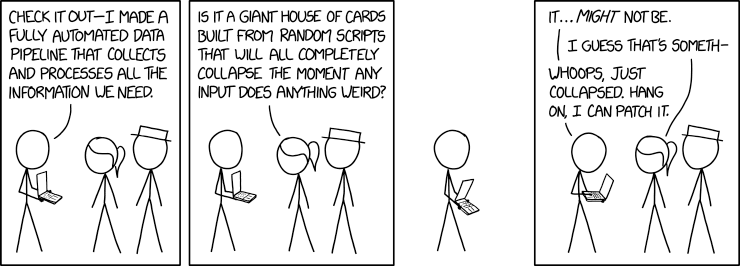
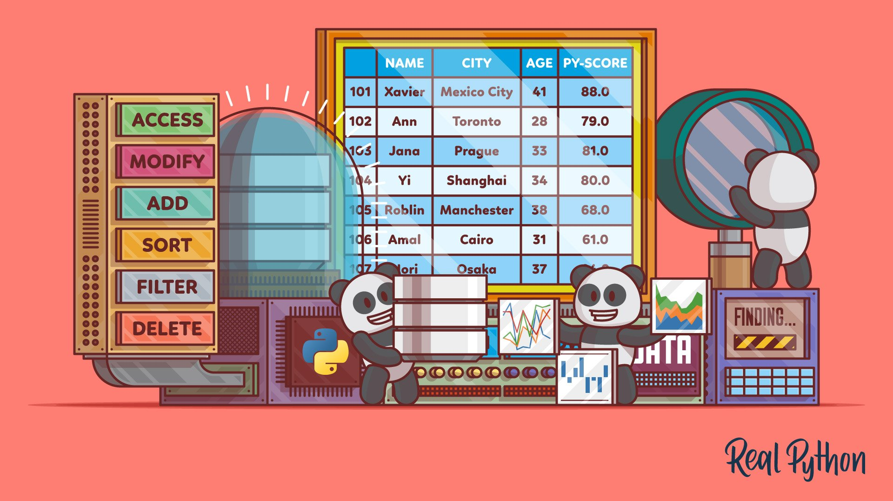
DataFrame| Tableur | Pandas | |
|---|---|---|
| Opérations | des clics | un script |
| Refaire l’analyse | tout refaire | relancer |
| Données d’origine | modifiées | intactes |
| Taille | limitée | millions de lignes |
L’enjeu : la reproductibilité — pour les autres, et pour soi dans six mois
Par contre sa propre philosophie
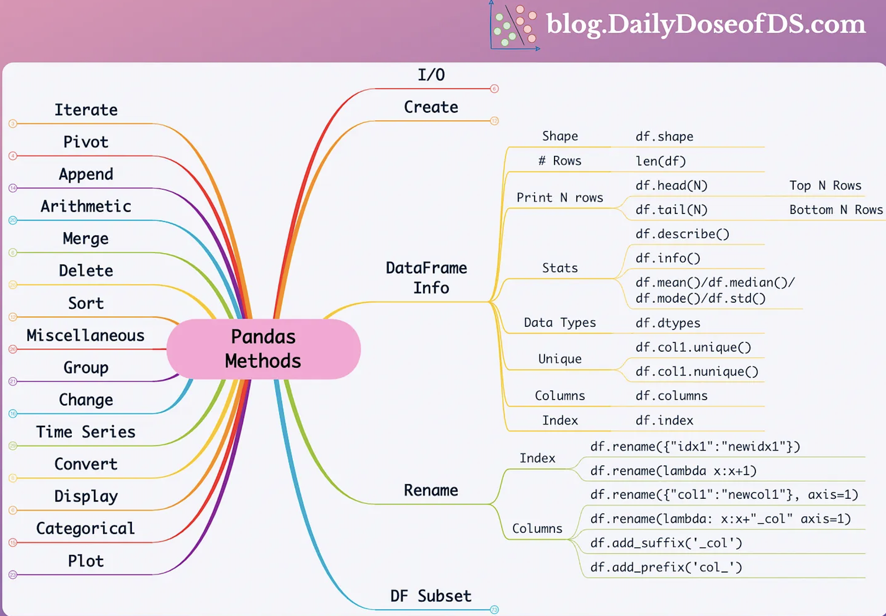
Le DataFrame
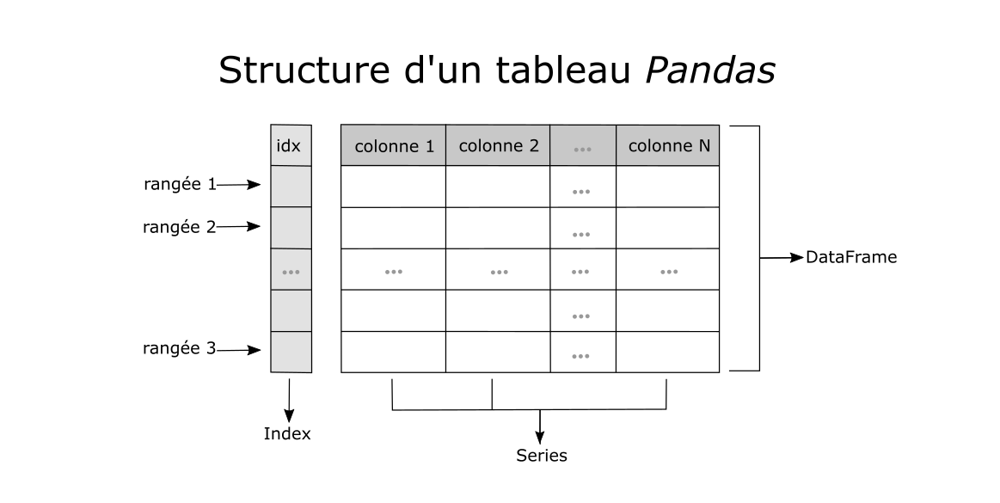
Petite démo
DataFrame : le tableau entierSeries : une colonne (ou une ligne), avec son typeIndex : les étiquettes des lignesOn travaille sur les colonnes entières, pas ligne par ligne
df.head(), df["age"].mean()…Rarement linéaire : beaucoup d’allers-retours
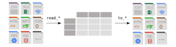
, ou ;) et à l’encodageopenpyxldf.to_csv(...), df.to_excel(...)Schéma : documentation pandas
Les questions à se poser
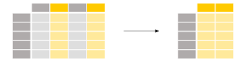
loc : par étiquette (index, nom de colonne)iloc : par position (comme une liste)Schéma : documentation pandas
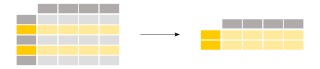
Attention aux parenthèses, et à & / | plutôt que and / or
Schéma : documentation pandas
df = df.rename(columns={"Q12": "diplome"})
df["age"].isna().sum() # compter les manquants
df = df.dropna(subset=["age"]) # ou .fillna(...)
df["sexe"] = df["sexe"].replace({1: "Homme", 2: "Femme"})
df["classe_age"] = pd.cut(df["age"],
bins=[18, 30, 50, 65, 100],
labels=["18-30", "31-50", "51-65", "65+"])
df["nb_mots"] = df["texte"].apply(lambda t: len(t.split()))La partie la plus longue d’une analyse… et la plus importante
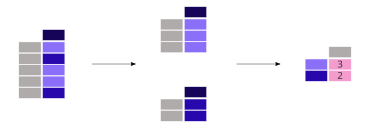
Tri à plat : value_counts() — tri croisé : pd.crosstab()
Schéma : documentation pandas
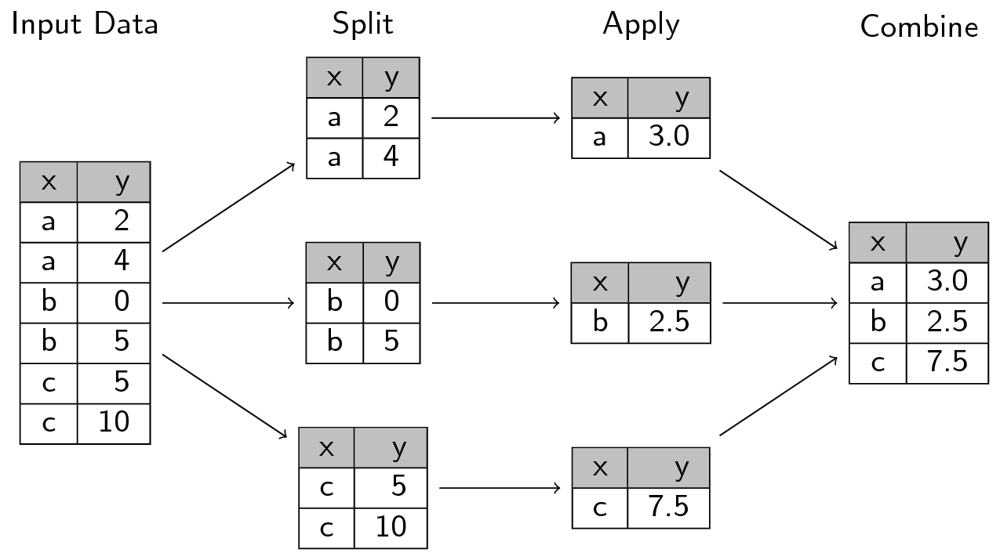
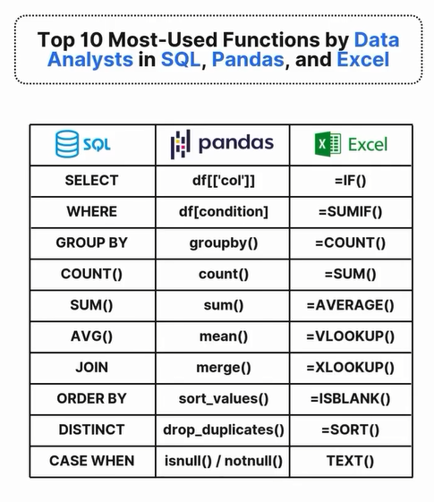
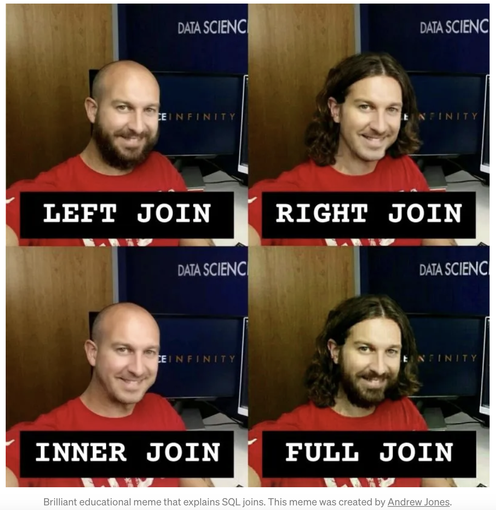
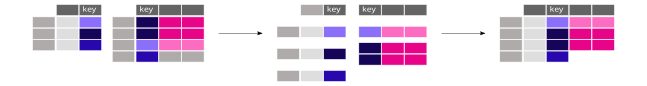
how : left, right, inner, outerSchéma : documentation pandas
Pour l’exploration, directement depuis le tableau
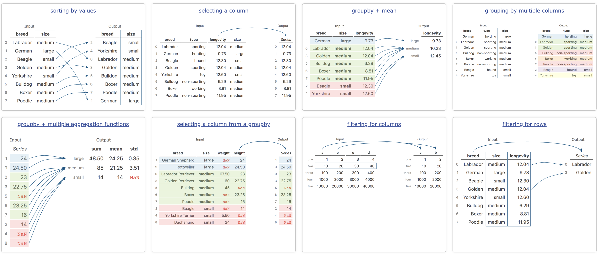
Une cheatsheet pour voir les possibilités
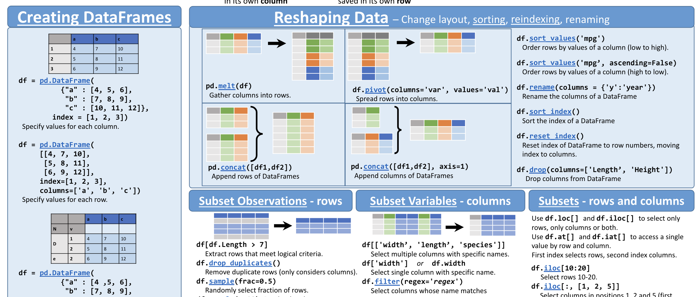
Et de manières de faire…
| Besoin | Quelques méthodes |
|---|---|
| Remodeler un tableau (large ↔︎ long) | pivot_table(), melt(), stack() |
| Travailler le texte | .str.contains(), .str.extract() + regex |
| Travailler les dates | pd.to_datetime(), .dt.year, resample() |
| Fenêtres glissantes, décalages | rolling(), shift(), cumsum() |
| Calculs relatifs au groupe | groupby().transform(), .rank() |
| Listes ou JSON dans des cellules | explode(), pd.json_normalize() |
| Index hiérarchiques | MultiIndex, unstack() |
| Gros fichiers | type category, chunksize, Parquet |
Inutile de tout connaître : savoir que ça existe, et chercher le moment venu
"12,5")NaN se propage dans les calculsreset_index()df = df.dropna() et pas juste df.dropna()df.head? ou help(df.head)Personne ne connaît Pandas par cœur : on cherche en permanence
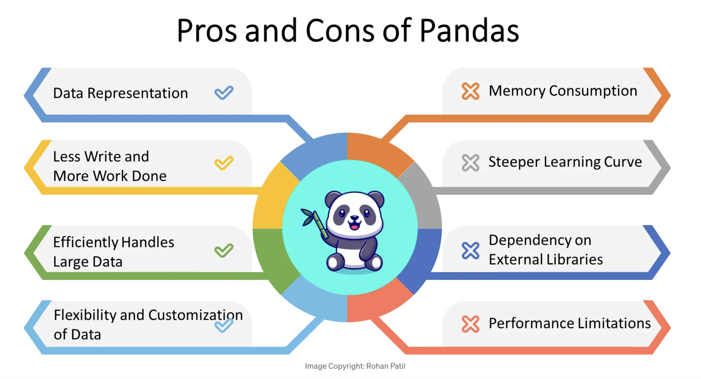
Commencer par Pandas reste le bon choix : les concepts se transfèrent
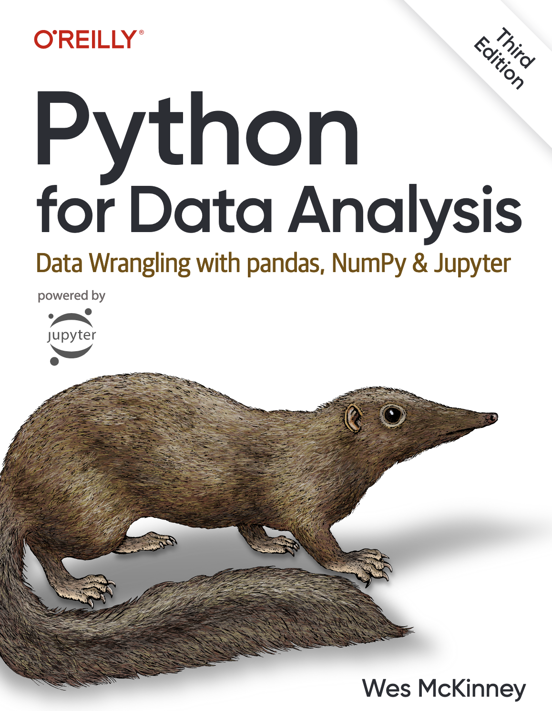
Avec un export de POP, la plateforme ouverte du patrimoine
pd.read_csv() ou pd.read_excel()head(), shape, info()value_counts(), describe().plot()On ouvre le notebook, et on y va pas à pas